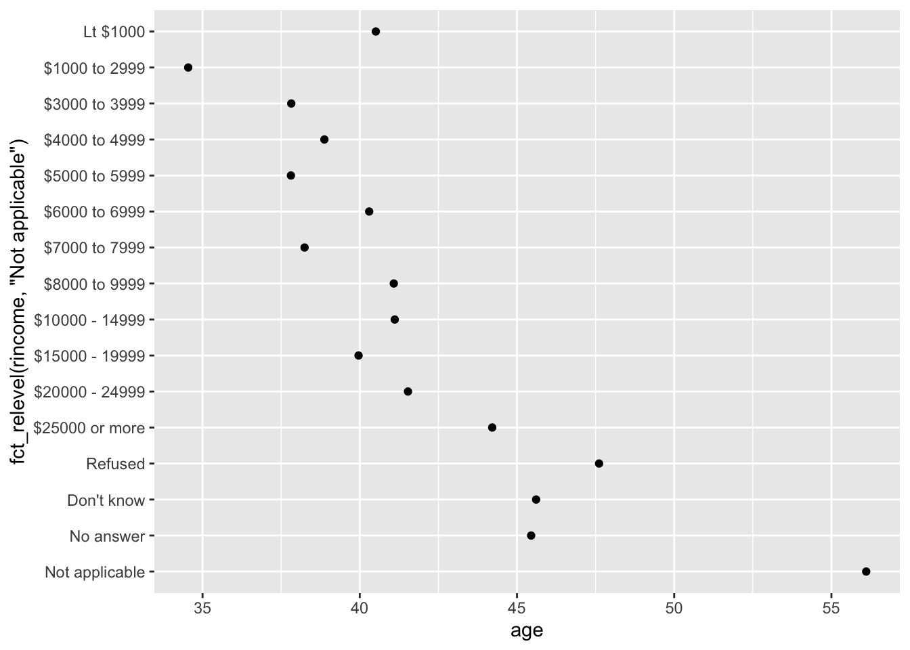

x <- c("Dec", "Apr", "Jan", "Mar")This lecture, as the rest of the course, is adapted from the version Stephanie C. Hicks designed and maintained in 2021 and 2022. Check the recent changes to this file through the GitHub history.
Pre-lecture materials
Read ahead
NoteRead ahead
Before class, you can prepare by reading the following materials:
- Wrangling Categorical Data in R by Amelia McNamara, Nicholas J Horton
- https://swcarpentry.github.io/r-novice-inflammation/12-supp-factors
- https://forcats.tidyverse.org
Acknowledgements
Material for this lecture was borrowed and adopted from
- Wrangling Categorical Data in R by Amelia McNamara, Nicholas J Horton
- https://r4ds.had.co.nz/factors
Learning objectives
NoteLearning objectives
At the end of this lesson you will:
- How to create factors and some challenges working with them in base R
- An introduction to the
forcatspackage in thetidyverseto work with categorical variables in R
Introduction
Factors are used for working with categorical variables, or variables that have a fixed and known set of possible values (income bracket, U.S. state, political affiliation).
Factors are useful when:
- You want to include categorical variables in regression models
- You want to plot categorical data (e.g. want to map categorical variables to aesthetic attributes)
- You want to display character vectors in a non-alphabetical order
TipExample
Imagine that you have a variable that records month:
Using a string to record this variable has two problems:
- There are only twelve possible months, and there’s nothing saving you from typos:
x_typo <- c("Dec", "Apr", "Jam", "Mar")- It doesn’t sort in a useful way:
sort(x)[1] "Apr" "Dec" "Jan" "Mar"Factor basics
You can fix both of these problems with a factor.
To create a factor you must start by creating a list of the valid levels:
month_levels <- c(
"Jan", "Feb", "Mar", "Apr", "May", "Jun",
"Jul", "Aug", "Sep", "Oct", "Nov", "Dec"
)Now we can create a factor with the factor() function defining the levels argument:
y <- factor(x, levels = month_levels)
y[1] Dec Apr Jan Mar
Levels: Jan Feb Mar Apr May Jun Jul Aug Sep Oct Nov DecWe can see what happens if we try to sort the factor:
sort(y)[1] Jan Mar Apr Dec
Levels: Jan Feb Mar Apr May Jun Jul Aug Sep Oct Nov DecWe can also check the attributes of the factor:
attributes(y)$levels
[1] "Jan" "Feb" "Mar" "Apr" "May" "Jun" "Jul" "Aug" "Sep" "Oct" "Nov" "Dec"
$class
[1] "factor"If you want to access the set of levels directly, you can do so with levels():
levels(y) [1] "Jan" "Feb" "Mar" "Apr" "May" "Jun" "Jul" "Aug" "Sep" "Oct" "Nov" "Dec"
TipNote
Any values not in the level will be silently converted to NA:
y_typo <- factor(x_typo, levels = month_levels)
y_typo[1] Dec Apr <NA> Mar
Levels: Jan Feb Mar Apr May Jun Jul Aug Sep Oct Nov DecChallenges working with categorical data
Working with categorical data can really helpful in many situations, but it also be challenging.
For example,
- What if the original data source for where the categorical data is getting ingested changes?
- If a domain expert is providing spreadsheet data at regular intervals, code that worked on the initial data may not generate an error message, but could silently produce incorrect results.
- What if a new level of a categorical data is added in an updated dataset?
- When categorical data are coded with numerical values, it can be easy to break the relationship between category numbers and category labels without realizing it, thus losing the information encoded in a variable.
- Let’s consider an example of this below.
TipExample
Consider a set of decades,
library(tidyverse)
x1_original <- c(10, 10, 10, 50, 60, 20, 20, 40)
x1_factor <- factor(x1_original)
attributes(x1_factor)$levels
[1] "10" "20" "40" "50" "60"
$class
[1] "factor"tibble(x1_original, x1_factor) %>%
mutate(x1_numeric = as.numeric(x1_factor))# A tibble: 8 × 3
x1_original x1_factor x1_numeric
<dbl> <fct> <dbl>
1 10 10 1
2 10 10 1
3 10 10 1
4 50 50 4
5 60 60 5
6 20 20 2
7 20 20 2
8 40 40 3Instead of creating a new variable with a numeric version of the value of the factor variable x1_factor, the variable loses the original numerical categories and creates a factor number (i.e., 10 is mapped to 1, 20 is mapped to 2, and 40 is mapped to 3, etc).
This result is unexpected because base::as.numeric() is intended to recover numeric information by coercing a character variable.
TipExample
Compare the following:
as.numeric(c("hello"))Warning: NAs introduced by coercion[1] NAas.numeric(factor(c("hello")))[1] 1In the first example, R does not how to convert the character string to a numeric, so it returns a NA.
In the second example, it creates factor numbers and orders them according to an alphabetical order. Here is another example of this behavior:
as.numeric(factor(c("hello", "goodbye")))[1] 2 1This behavior of the factor() function feels unexpected at best.
Another example of unexpected behavior is how the function will silently make a missing value because the values in the data and the levels do not match.
factor("a", levels = "c")[1] <NA>
Levels: cThe unfortunate behavior of factors in R has led to an online movement against the default behavior of many data import functions to make factors out of any variable composed as strings.
The tidyverse is part of this movement, with functions from the readr package defaulting to leaving strings as-is. Others used to chose to add options(stringAsFactors = FALSE) into their start up commands to override R’s default of stringsAsFactors = TRUE in functions such as read.table(). However, that is no longer needed in recent versions of R as the default has become stringsAsFactors = FALSE as documented on the official R blog: https://blog.r-project.org/2020/02/16/stringsasfactors/.
Factors when modeling data
So if factors are so troublesome, what’s the point of them in the first place?
Factors are still necessary for some data analytic tasks. The most salient case is in statistical modeling.
When you pass a factor variable into lm() or glm(), R automatically creates indicator (or more colloquially ‘dummy’) variables for each of the levels and picks one as a reference group.
For simple cases, this behavior can also be achieved with a character vector.
However, to choose which level to use as a reference level or to order classes, factors must be used.
TipExample
Consider a vector of character strings with three income levels:
income_level <- c(
rep("low", 10),
rep("medium", 10),
rep("high", 10)
)
income_level [1] "low" "low" "low" "low" "low" "low" "low" "low"
[9] "low" "low" "medium" "medium" "medium" "medium" "medium" "medium"
[17] "medium" "medium" "medium" "medium" "high" "high" "high" "high"
[25] "high" "high" "high" "high" "high" "high" Here, it might make sense to use the lowest income level (low) as the reference class so that all the other coefficients can be interpreted in comparison to it.
However, R would use high as the reference by default because ‘h’ comes before ‘l’ in the alphabet.
x <- factor(income_level)
x [1] low low low low low low low low low low
[11] medium medium medium medium medium medium medium medium medium medium
[21] high high high high high high high high high high
Levels: high low mediumy <- rnorm(30) # generate some random obs from a normal dist
lm(y ~ x)
Call:
lm(formula = y ~ x)
Coefficients:
(Intercept) xlow xmedium
0.9746 -1.2440 -1.1909 Memory req for factors and character strings
Consider a large character string such as income_level corresponding to a categorical variable.
income_level <- c(
rep("low", 10000),
rep("medium", 10000),
rep("high", 10000)
)In early versions of R, storing categorical data as a factor variable was considerably more efficient than storing the same data as strings, because factor variables only store the factor labels once.
However, R now uses a global string pool, so each unique string is only stored once, which means storage is now less of an issue.
format(object.size(income_level), units = "Kb") # size of the character string[1] "234.6 Kb"format(object.size(factor(income_level)), units = "Kb") # size of the factor[1] "117.8 Kb"Summary
Factors can be really useful in many data analytic tasks, but the base R functions to work with factors can lead to some unexpected behavior that can catch new R users.
Let’s introduce a package to make wrangling factors easier.
forcats
Next, we will introduce the forcats package, which is part of the core tidyverse, but can also be loaded directly
library("forcats")It provides tools for dealing with categorical variables (and it’s an anagram of factors!) using a wide range of helpers for working with factors.
General Social Survey
For the rest of this lecture, we are going to use the gss_cat dataset that is installed when you load forcats.
It’s a sample of data from the General Social Survey, a long-running US survey conducted by the independent research organization NORC at the University of Chicago.
The survey has thousands of questions, so in gss_cat.
I have selected a handful that will illustrate some common challenges you will encounter when working with factors.
gss_cat# A tibble: 21,483 × 9
year marital age race rincome partyid relig denom tvhours
<int> <fct> <int> <fct> <fct> <fct> <fct> <fct> <int>
1 2000 Never married 26 White $8000 to 9999 Ind,near … Prot… Sout… 12
2 2000 Divorced 48 White $8000 to 9999 Not str r… Prot… Bapt… NA
3 2000 Widowed 67 White Not applicable Independe… Prot… No d… 2
4 2000 Never married 39 White Not applicable Ind,near … Orth… Not … 4
5 2000 Divorced 25 White Not applicable Not str d… None Not … 1
6 2000 Married 25 White $20000 - 24999 Strong de… Prot… Sout… NA
7 2000 Never married 36 White $25000 or more Not str r… Chri… Not … 3
8 2000 Divorced 44 White $7000 to 7999 Ind,near … Prot… Luth… NA
9 2000 Married 44 White $25000 or more Not str d… Prot… Other 0
10 2000 Married 47 White $25000 or more Strong re… Prot… Sout… 3
# ℹ 21,473 more rows
TipPro-tip
Since this dataset is provided by a package, you can get more information about the variables with ?gss_cat.
When factors are stored in a tibble, you cannot see their levels so easily. One way to view them is with count():
gss_cat %>%
count(race)# A tibble: 3 × 2
race n
<fct> <int>
1 Other 1959
2 Black 3129
3 White 16395Or with a bar chart using the geom_bar() geom:
gss_cat %>%
ggplot(aes(x = race)) +
geom_bar()
TipImportant
When working with factors, the two most common operations are
- Changing the order of the levels
- Changing the values of the levels
Those operations are described in the sections below.
Modifying factor order
It’s often useful to change the order of the factor levels in a visualization.
Let’s explore the relig (religion) factor:
gss_cat %>%
count(relig)# A tibble: 15 × 2
relig n
<fct> <int>
1 No answer 93
2 Don't know 15
3 Inter-nondenominational 109
4 Native american 23
5 Christian 689
6 Orthodox-christian 95
7 Moslem/islam 104
8 Other eastern 32
9 Hinduism 71
10 Buddhism 147
11 Other 224
12 None 3523
13 Jewish 388
14 Catholic 5124
15 Protestant 10846We see there are 15 categories in the gss_cat dataset.
attributes(gss_cat$relig)$levels
[1] "No answer" "Don't know"
[3] "Inter-nondenominational" "Native american"
[5] "Christian" "Orthodox-christian"
[7] "Moslem/islam" "Other eastern"
[9] "Hinduism" "Buddhism"
[11] "Other" "None"
[13] "Jewish" "Catholic"
[15] "Protestant" "Not applicable"
$class
[1] "factor"The first level is “No answer” followed by “Don’t know”, and so on.
Imagine you want to explore the average number of hours spent watching TV (tvhours) per day across religions (relig):
relig_summary <- gss_cat %>%
group_by(relig) %>%
summarise(
tvhours = mean(tvhours, na.rm = TRUE),
n = n()
)
relig_summary %>%
ggplot(aes(x = tvhours, y = relig)) +
geom_point()
The y-axis lists the levels of the relig factor in the order of the levels.
However, it is hard to read this plot because there’s no overall pattern.
fct_reorder
We can improve it by reordering the levels of relig using fct_reorder(). fct_reorder(.f, .x, .fun) takes three arguments:
.f, the factor whose levels you want to modify..x, a numeric vector that you want to use to reorder the levels.- Optionally,
.fun, a function that’s used if there are multiple values ofxfor each value off. The default value ismedian.
relig_summary %>%
ggplot(aes(
x = tvhours,
y = fct_reorder(.f = relig, .x = tvhours)
)) +
geom_point()Reordering religion makes it much easier to see that people in the “Don’t know” category watch much more TV, and Hinduism & Other Eastern religions watch much less.
As you start making more complicated transformations, I recommend moving them out of aes() and into a separate mutate() step.
TipExample
You could rewrite the plot above as:
relig_summary %>%
mutate(relig = fct_reorder(relig, tvhours)) %>%
ggplot(aes(x = tvhours, y = relig)) +
geom_point()
TipAnother example
What if we create a similar plot looking at how average age varies across reported income level?
rincome_summary <-
gss_cat %>%
group_by(rincome) %>%
summarise(
age = mean(age, na.rm = TRUE),
n = n()
)
## Original rincome order
rincome_summary %>%
ggplot(aes(x = age, y = rincome)) +
geom_point()## rincome re-ordered by age's values
rincome_summary %>%
ggplot(aes(x = age, y = fct_reorder(.f = rincome, .x = age))) +
geom_point()
Here, arbitrarily reordering the levels isn’t a good idea! That’s because rincome already has a principled order that we shouldn’t mess with.
TipPro-tip
Reserve fct_reorder() for factors whose levels are arbitrarily ordered.
NoteQuestion
Let’s practice fct_reorder(). Using the palmerpenguins dataset,
- Calculate the average
bill_length_mmfor each species - Create a scatter plot showing the average for each species.
- Go back and reorder the factor
speciesbased on the average bill length from largest to smallest. - Now order it from smallest to largest
library(palmerpenguins)
penguins# A tibble: 344 × 8
species island bill_length_mm bill_depth_mm flipper_length_mm body_mass_g
<fct> <fct> <dbl> <dbl> <int> <int>
1 Adelie Torgersen 39.1 18.7 181 3750
2 Adelie Torgersen 39.5 17.4 186 3800
3 Adelie Torgersen 40.3 18 195 3250
4 Adelie Torgersen NA NA NA NA
5 Adelie Torgersen 36.7 19.3 193 3450
6 Adelie Torgersen 39.3 20.6 190 3650
7 Adelie Torgersen 38.9 17.8 181 3625
8 Adelie Torgersen 39.2 19.6 195 4675
9 Adelie Torgersen 34.1 18.1 193 3475
10 Adelie Torgersen 42 20.2 190 4250
# ℹ 334 more rows
# ℹ 2 more variables: sex <fct>, year <int>## Try it outfct_relevel
However, it does make sense to pull “Not applicable” to the front with the other special levels.
You can use fct_relevel().
It takes a factor, f, and then any number of levels that you want to move to the front of the line.
rincome_summary %>%
ggplot(aes(age, fct_relevel(rincome, "Not applicable"))) +
geom_point()
TipNote
Any levels not mentioned in fct_relevel will be left in their existing order.
Another type of reordering is useful when you are coloring the lines on a plot. fct_reorder2(f, x, y) reorders the factor f by the y values associated with the largest x values.
This makes the plot easier to read because the colors of the line at the far right of the plot will line up with the legend.
by_age <-
gss_cat %>%
filter(!is.na(age)) %>%
count(age, marital) %>%
group_by(age) %>%
mutate(prop = n / sum(n))
by_age %>%
ggplot(aes(age, prop, colour = marital)) +
geom_line(na.rm = TRUE)
by_age %>%
ggplot(aes(age, prop, colour = fct_reorder2(marital, age, prop))) +
geom_line() +
labs(colour = "marital")![- A line plot with age on the x-axis and proportion on the y-axis. There is one line for each category of marital status: no answer, never married, separated, divorced, widowed, and married. It is a little hard to read the plot because the order of the legend is unrelated to the lines on the plot. - Rearranging the legend makes the plot easier to read because the legend colours now match the order of the lines on the far right of the plot. You can see some unsuprising patterns: the proportion never marred decreases with age, married forms an upside down U shape, and widowed starts off low but increases steeply after age 60.](index_files/figure-html/unnamed-chunk-30-1.png)
![- A line plot with age on the x-axis and proportion on the y-axis. There is one line for each category of marital status: no answer, never married, separated, divorced, widowed, and married. It is a little hard to read the plot because the order of the legend is unrelated to the lines on the plot. - Rearranging the legend makes the plot easier to read because the legend colours now match the order of the lines on the far right of the plot. You can see some unsuprising patterns: the proportion never marred decreases with age, married forms an upside down U shape, and widowed starts off low but increases steeply after age 60.](index_files/figure-html/unnamed-chunk-30-2.png)
fct_infreq
Finally, for bar plots, you can use fct_infreq() to order levels in decreasing frequency: this is the simplest type of reordering because it doesn’t need any extra variables. Combine it with fct_rev() if you want them in increasing frequency so that in the bar plot largest values are on the right, not the left.
gss_cat %>%
mutate(marital = marital %>% fct_infreq() %>% fct_rev()) %>%
ggplot(aes(marital)) +
geom_bar()Modifying factor levels
More powerful than changing the orders of the levels is changing their values. This allows you to clarify labels for publication, and collapse levels for high-level displays.
fct_recode
The most general and powerful tool is fct_recode(). It allows you to recode, or change, the value of each level. For example, take the gss_cat$partyid:
gss_cat %>%
count(partyid)# A tibble: 10 × 2
partyid n
<fct> <int>
1 No answer 154
2 Don't know 1
3 Other party 393
4 Strong republican 2314
5 Not str republican 3032
6 Ind,near rep 1791
7 Independent 4119
8 Ind,near dem 2499
9 Not str democrat 3690
10 Strong democrat 3490The levels are terse and inconsistent.
Let’s tweak them to be longer and use a parallel construction.
Like most rename and recoding functions in the tidyverse:
- the new values go on the left
- the old values go on the right
gss_cat %>%
mutate(partyid = fct_recode(partyid,
"Republican, strong" = "Strong republican",
"Republican, weak" = "Not str republican",
"Independent, near rep" = "Ind,near rep",
"Independent, near dem" = "Ind,near dem",
"Democrat, weak" = "Not str democrat",
"Democrat, strong" = "Strong democrat"
)) %>%
count(partyid)# A tibble: 10 × 2
partyid n
<fct> <int>
1 No answer 154
2 Don't know 1
3 Other party 393
4 Republican, strong 2314
5 Republican, weak 3032
6 Independent, near rep 1791
7 Independent 4119
8 Independent, near dem 2499
9 Democrat, weak 3690
10 Democrat, strong 3490
TipNote
fct_recode() will leave the levels that aren’t explicitly mentioned as is, and will warn you if you accidentally refer to a level that doesn’t exist.
To combine groups, you can assign multiple old levels to the same new level:
gss_cat %>%
mutate(partyid = fct_recode(partyid,
"Republican, strong" = "Strong republican",
"Republican, weak" = "Not str republican",
"Independent, near rep" = "Ind,near rep",
"Independent, near dem" = "Ind,near dem",
"Democrat, weak" = "Not str democrat",
"Democrat, strong" = "Strong democrat",
"Other" = "No answer",
"Other" = "Don't know",
"Other" = "Other party"
)) %>%
count(partyid)# A tibble: 8 × 2
partyid n
<fct> <int>
1 Other 548
2 Republican, strong 2314
3 Republican, weak 3032
4 Independent, near rep 1791
5 Independent 4119
6 Independent, near dem 2499
7 Democrat, weak 3690
8 Democrat, strong 3490Use this technique with care: if you group together categories that are truly different you will end up with misleading results.
fct_collapse
If you want to collapse a lot of levels, fct_collapse() is a useful variant of fct_recode().
For each new variable, you can provide a vector of old levels:
gss_cat %>%
mutate(partyid = fct_collapse(partyid,
"other" = c("No answer", "Don't know", "Other party"),
"rep" = c("Strong republican", "Not str republican"),
"ind" = c("Ind,near rep", "Independent", "Ind,near dem"),
"dem" = c("Not str democrat", "Strong democrat")
)) %>%
count(partyid)# A tibble: 4 × 2
partyid n
<fct> <int>
1 other 548
2 rep 5346
3 ind 8409
4 dem 7180fct_lump_*
Sometimes you just want to lump together the small groups to make a plot or table simpler.
That’s the job of the fct_lump_*() family of functions.
fct_lump_lowfreq() is a simple starting point that progressively lumps the smallest groups categories into “Other”, always keeping “Other” as the smallest category.
gss_cat %>%
mutate(relig = fct_lump_lowfreq(relig)) %>%
count(relig)# A tibble: 2 × 2
relig n
<fct> <int>
1 Protestant 10846
2 Other 10637In this case it’s not very helpful: it is true that the majority of Americans in this survey are Protestant, but we’d probably like to see some more details!
Instead, we can use the fct_lump_n() to specify that we want exactly 10 groups:
gss_cat %>%
mutate(relig = fct_lump_n(relig, n = 10)) %>%
count(relig, sort = TRUE) %>%
print(n = Inf)# A tibble: 10 × 2
relig n
<fct> <int>
1 Protestant 10846
2 Catholic 5124
3 None 3523
4 Christian 689
5 Other 458
6 Jewish 388
7 Buddhism 147
8 Inter-nondenominational 109
9 Moslem/islam 104
10 Orthodox-christian 95Read the documentation to learn about fct_lump_min() and fct_lump_prop() which are useful in other cases.
Ordered factors
There’s a special type of factor that needs to be mentioned briefly: ordered factors.
Ordered factors, created with ordered(), imply a strict ordering and equal distance between levels:
The first level is “less than” the second level by the same amount that the second level is “less than” the third level, and so on…
You can recognize them when printing because they use < between the factor levels:
ordered(c("a", "b", "c"))[1] a b c
Levels: a < b < cHowever, in practice, ordered() factors behave very similarly to regular factors.
Post-lecture materials
Final Questions
Here are some post-lecture questions to help you think about the material discussed.
NoteQuestions
Explore the distribution of
rincome(reported income). What makes the default bar chart hard to understand? How could you improve the plot?What is the most common
religin this survey? What’s the most commonpartyid?Which
religdoesdenom(denomination) apply to? How can you find out with a table? How can you find out with a visualization?There are some suspiciously high numbers in
tvhours. Is the mean a good summary?For each factor in
gss_catidentify whether the order of the levels is arbitrary or principled.Why did moving “Not applicable” to the front of the levels move it to the bottom of the plot?
How have the proportions of people identifying as Democrat, Republican, and Independent changed over time?
How could you collapse
rincomeinto a small set of categories?Notice there are 9 groups (excluding other) in the
fct_lumpexample above. Why not 10? (Hint: type?fct_lump, and find the default for the argumentother_levelis “Other”.)
Additional Resources
Tip
- https://r4ds.had.co.nz/factors
- Wrangling Categorical Data in R by Amelia McNamara, Nicholas J Horton
- https://swcarpentry.github.io/r-novice-inflammation/12-supp-factors
- https://forcats.tidyverse.org
R session information
options(width = 120)
sessioninfo::session_info()─ Session info ───────────────────────────────────────────────────────────────────────────────────────────────────────
setting value
version R version 4.3.1 (2023-06-16)
os macOS Ventura 13.6
system aarch64, darwin20
ui X11
language (EN)
collate en_US.UTF-8
ctype en_US.UTF-8
tz America/New_York
date 2023-10-02
pandoc 3.1.5 @ /opt/homebrew/bin/ (via rmarkdown)
─ Packages ───────────────────────────────────────────────────────────────────────────────────────────────────────────
package * version date (UTC) lib source
cli 3.6.1 2023-03-23 [1] CRAN (R 4.3.0)
colorout 1.3-0 2023-09-28 [1] Github (jalvesaq/colorout@8384882)
colorspace 2.1-0 2023-01-23 [1] CRAN (R 4.3.0)
digest 0.6.33 2023-07-07 [1] CRAN (R 4.3.0)
dplyr * 1.1.3 2023-09-03 [1] CRAN (R 4.3.0)
evaluate 0.21 2023-05-05 [1] CRAN (R 4.3.0)
fansi 1.0.4 2023-01-22 [1] CRAN (R 4.3.0)
farver 2.1.1 2022-07-06 [1] CRAN (R 4.3.0)
fastmap 1.1.1 2023-02-24 [1] CRAN (R 4.3.0)
forcats * 1.0.0 2023-01-29 [1] CRAN (R 4.3.0)
generics 0.1.3 2022-07-05 [1] CRAN (R 4.3.0)
ggplot2 * 3.4.3 2023-08-14 [1] CRAN (R 4.3.0)
glue 1.6.2 2022-02-24 [1] CRAN (R 4.3.0)
gtable 0.3.4 2023-08-21 [1] CRAN (R 4.3.0)
hms 1.1.3 2023-03-21 [1] CRAN (R 4.3.0)
htmltools 0.5.6 2023-08-10 [1] CRAN (R 4.3.0)
htmlwidgets 1.6.2 2023-03-17 [1] CRAN (R 4.3.0)
jsonlite 1.8.7 2023-06-29 [1] CRAN (R 4.3.0)
knitr 1.44 2023-09-11 [1] CRAN (R 4.3.0)
labeling 0.4.3 2023-08-29 [1] CRAN (R 4.3.0)
lifecycle 1.0.3 2022-10-07 [1] CRAN (R 4.3.0)
lubridate * 1.9.2 2023-02-10 [1] CRAN (R 4.3.0)
magrittr 2.0.3 2022-03-30 [1] CRAN (R 4.3.0)
munsell 0.5.0 2018-06-12 [1] CRAN (R 4.3.0)
palmerpenguins * 0.1.1 2022-08-15 [1] CRAN (R 4.3.0)
pillar 1.9.0 2023-03-22 [1] CRAN (R 4.3.0)
pkgconfig 2.0.3 2019-09-22 [1] CRAN (R 4.3.0)
purrr * 1.0.2 2023-08-10 [1] CRAN (R 4.3.0)
R6 2.5.1 2021-08-19 [1] CRAN (R 4.3.0)
readr * 2.1.4 2023-02-10 [1] CRAN (R 4.3.0)
rlang 1.1.1 2023-04-28 [1] CRAN (R 4.3.0)
rmarkdown 2.24 2023-08-14 [1] CRAN (R 4.3.1)
rstudioapi 0.15.0 2023-07-07 [1] CRAN (R 4.3.0)
scales 1.2.1 2022-08-20 [1] CRAN (R 4.3.0)
sessioninfo 1.2.2 2021-12-06 [1] CRAN (R 4.3.0)
stringi 1.7.12 2023-01-11 [1] CRAN (R 4.3.0)
stringr * 1.5.0 2022-12-02 [1] CRAN (R 4.3.0)
tibble * 3.2.1 2023-03-20 [1] CRAN (R 4.3.0)
tidyr * 1.3.0 2023-01-24 [1] CRAN (R 4.3.0)
tidyselect 1.2.0 2022-10-10 [1] CRAN (R 4.3.0)
tidyverse * 2.0.0 2023-02-22 [1] CRAN (R 4.3.0)
timechange 0.2.0 2023-01-11 [1] CRAN (R 4.3.0)
tzdb 0.4.0 2023-05-12 [1] CRAN (R 4.3.0)
utf8 1.2.3 2023-01-31 [1] CRAN (R 4.3.0)
vctrs 0.6.3 2023-06-14 [1] CRAN (R 4.3.0)
withr 2.5.0 2022-03-03 [1] CRAN (R 4.3.0)
xfun 0.40 2023-08-09 [1] CRAN (R 4.3.0)
yaml 2.3.7 2023-01-23 [1] CRAN (R 4.3.0)
[1] /Library/Frameworks/R.framework/Versions/4.3-arm64/Resources/library
──────────────────────────────────────────────────────────────────────────────────────────────────────────────────────